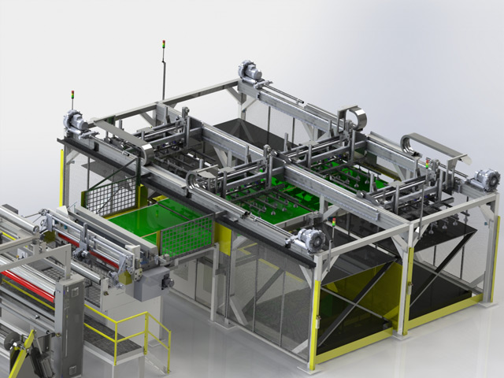
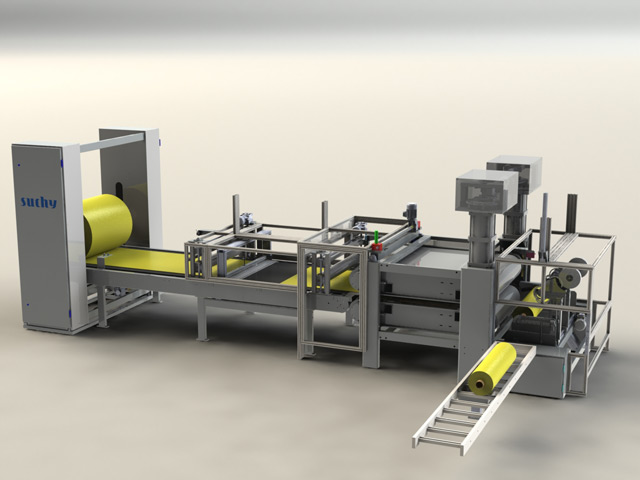

Digitaldrucker
Lieferung eines single-pass Digitaldruckers zur Integration in eine bestehende Linie.

Wir bauen keine Serie. Wir bauen die eine Maschine, die Ihren Prozess möglich macht — von der Konstruktion bis zur Inbetriebnahme, zu über 90 % aus eigener Fertigung.
Spezialisiert auf Sonder-Textilmaschinen für die Be- und Verarbeitung vorwiegend technischer Textilien und artverwandter Produkte.
Gemeinsam definieren wir Prozess, Warenbahn, Leistung und Schnittstellen — bevor die erste Zeichnung entsteht.
Maschinen- und steuerungstechnische Auslegung im Haus, abgestimmt auf Ihre Halle und Ihre Vorprodukte.
Höchste Fertigungstiefe heißt: kontrollierbar, steuerbar, terminsicher. Keine Blackbox beim Zulieferer.
Sie verfolgen den Entstehungsprozess, prüfen, korrigieren. Am Ende übernehmen Sie Ihre Maschine.

Fünf Technologiefelder, beliebig kombinierbar zur kompletten Linie.
Flüssigkeit raus, bevor sie Energie kostet. Mechanische Entwässerung für breite Warenbahnen.
02↗Definierter Auftrag von Pasten, Dispersionen und Schmelzen — reproduzierbar über die gesamte Breite.
03↗Kaschieren, laminieren, kalibrieren. Auch mobil, auch mit großer Walzenbreite.
04↗Wenn Standard nicht passt: Wickler, Warenspeicher und komplette Sonderanlagen als eine Einheit.
05↗Längs, quer, gestapelt — automatisiert bis zur fertigen Palette, inklusive Steuerungstechnik.
06↗Sie haben einen Prozess, für den es keine Maschine gibt? Genau dafür sind wir da.
Zwei Beispiele aus der Praxis, stellvertretend für Anlagen in ganz Europa.
Ein Beweis für die Leistungsfähigkeit beim Umsetzen innovativer Herausforderungen: eine anspruchsvolle maschinen- und steuerungstechnische Lösung einer automatisch arbeitenden Schneid-Stapelanlage für einen Automobilzulieferer.
Wozu früher mehrere Baugruppen und Maschinen nötig waren, leistet diese Anlage in einer kompakten Einheit: chronologisch abgestimmte Abläufe, weniger Zwischenschritte, weniger Produktionsfläche, weniger Arbeitszeit.
Was gerade die Halle verlässt.
Lieferung eines single-pass Digitaldruckers zur Integration in eine bestehende Linie.
Entwicklung und Lieferung einer Laborbeschichtungsanlage für Versuchsreihen im Kleinformat.
Lieferung eines mobilen Komprimierkalanders mit großer Walzenbreite.
Suchy Textilmaschinenbau GmbH · Heidelbergstraße 13 · 07554 Korbußen
Tel. +49 36602 13 40 · info@suchy-textil.de